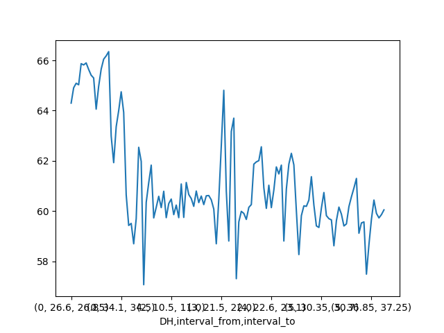

Note
Go to the end to download the full example code.
Interval Data
This example adds a second dimension. The second dimension is an interval, of the form interval_from, interval_to. It is also known as binned data, where each ‘bin’ is bounded between and upper and lower limit.
An interval is relevant in geology, when analysing drill hole data.
Intervals are also encountered in metallurgy, but in that discipline they are often called fractions, e.g. size fractions. In that case the typical nomenclature is size_retained, size passing, since the data originates from a sieve stack.
import logging
import pandas as pd
from matplotlib import pyplot as plt
from elphick.geomet import Sample, IntervalSample
from elphick.geomet.data.downloader import Downloader
from elphick.geomet.utils.pandas import weight_average
logging.basicConfig(level=logging.INFO,
format='%(asctime)s %(levelname)s %(module)s - %(funcName)s: %(message)s',
datefmt='%Y-%m-%dT%H:%M:%S%z',
)
Create a MassComposition object
We get some demo data in the form of a pandas DataFrame We create this object as 1D based on the pandas index
iron_ore_sample_data: pd.DataFrame = Downloader().load_data(datafile='iron_ore_sample_A072391.zip', show_report=False)
df_data: pd.DataFrame = iron_ore_sample_data
df_data.head()
Downloading file 'iron_ore_sample_A072391.zip' from 'https://github.com/elphick/mass-composition/raw/main/docs/source/_static/iron_ore_sample_A072391.zip' to '/home/runner/.cache/mass_composition'.
Unzipping contents of '/home/runner/.cache/mass_composition/iron_ore_sample_A072391.zip' to '/home/runner/.cache/mass_composition/iron_ore_sample_A072391.zip.unzip'
obj_mc: Sample = Sample(df_data, name='Drill program')
obj_mc
<elphick.geomet.sample.Sample object at 0x7fe1d5492980>
obj_mc.aggregate
Use the normal pandas groupby-apply as needed. Here we leverage the weight_average function from utils.pandas
hole_average: pd.DataFrame = obj_mc.data.groupby('DHID').apply(weight_average)
hole_average
/home/runner/work/geometallurgy/geometallurgy/examples/02_interval_sample/01_interval_sample.py:56: DeprecationWarning:
DataFrameGroupBy.apply operated on the grouping columns. This behavior is deprecated, and in a future version of pandas the grouping columns will be excluded from the operation. Either pass `include_groups=False` to exclude the groupings or explicitly select the grouping columns after groupby to silence this warning.
We will now make a 2D dataset using DHID and the interval. We will first create a mean interval variable. Then we will set the dataframe index to both variables before constructing the object.
print(df_data.columns)
df_data['DHID'] = df_data['DHID'].astype('category')
# make an int based drillhole identifier
code, dh_id = pd.factorize(df_data['DHID'])
df_data['DH'] = code
df_data = df_data.reset_index().set_index(['DH', 'interval_from', 'interval_to'])
obj_mc_2d: IntervalSample = IntervalSample(df_data,
name='Drill program')
# obj_mc_2d._data.assign(hole_id=dh_id)
print(obj_mc_2d)
print(obj_mc_2d.aggregate)
# print(obj_mc_2d.aggregate('DHID'))
Index(['index', 'mass_dry', 'H2O', 'MgO', 'MnO', 'Al2O3', 'P', 'Fe', 'SiO2',
'TiO2', 'CaO', 'Na2O', 'K2O', 'DHID', 'interval_from', 'interval_to',
'mass_wet'],
dtype='object')
IntervalSample: Drill program
{'mass_wet': {0: 2029.6178076448032}, 'mass_dry': {0: 1981.688}, 'H2O': {0: 2.3615188763258583}, 'MgO': {0: 0.08051321903347046}, 'MnO': {0: 0.14921928174364477}, 'Al2O3': {0: 1.773585095131019}, 'P': {0: 0.044627670955266416}, 'Fe': {0: 60.443937895370006}, 'SiO2': {0: 2.827210176374888}, 'TiO2': {0: 0.06297808534945964}, 'CaO': {0: 0.12507133312610258}, 'Na2O': {0: 0.015876646576050316}, 'K2O': {0: 0.013163565606694896}}
mass_wet mass_dry H2O ... CaO Na2O K2O
0 2029.617808 1981.688 2.361519 ... 0.125071 0.015877 0.013164
[1 rows x 13 columns]
View some plots
First confirm the parallel plot still works
# TODO: work on the display order
# TODO - fails for DH (integer)
# fig: Figure = obj_mc_2d.plot_parallel(color='Fe')
# fig.show()
# now plot using the xarray data - take advantage of the multi-dim nature of the package
obj_mc_2d.data['Fe'].plot()
plt.show()

Total running time of the script: (0 minutes 1.197 seconds)